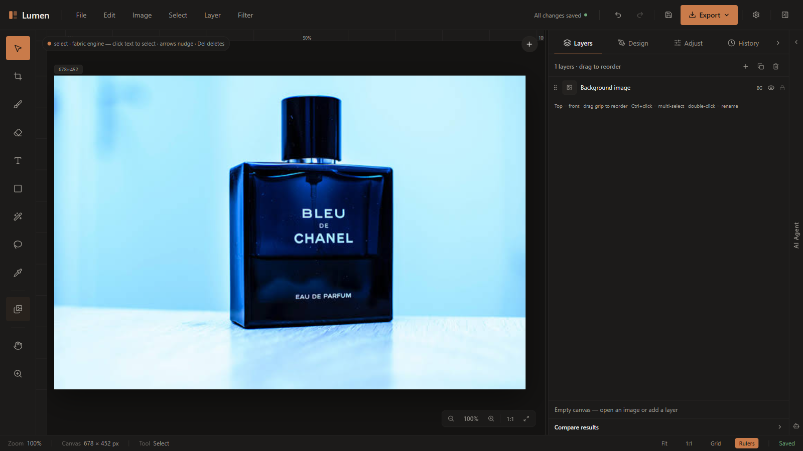

يرافقك هذا الدليل خطوة بخطوة داخل Lumen: من فتح أول صورة، مرورًا بكل زر وأداة وفلتر ونافذة، وحتى تصدير عملك بالجودة الكاملة. كل عنصر مشروح بلقطة شاشة حقيقية مع أسهم وأرقام تدل على موقعه بالضبط، مع بيان متى تستخدمه وكيف.

| 3 | البداية السريعة — أول تصدير خلال دقائق |
| 4 | خريطة الواجهة الكاملة (13 منطقة مرقّمة) |
| 5 | الشريط العلوي: القوائم الست وأزرار الإجراءات |
| 6 | قائمة File: الملفات والمشاريع والحفظ التلقائي |
| 7 | شريط الأدوات: الأدوات الاثنتا عشرة |
| 8 | التحديد الذكي وأدوات قناع الاختيار |
| 9 | الرسم والكتابة والأشكال (Design للنص) |
| 10 | تبويب Layers: الطبقات |
| 11 | تبويب Design: مفتش الخصائص |
| 12 | تبويب Adjust (1): الفلاتر السريعة والستايلات |
| 13 | تبويب Adjust (2): المؤثرات والشرائح واللمسات المحفوظة |
| 14 | دراسة حالة: تحويل كامل لصورة العطر خطوة بخطوة |
| 15 | قائمة Filter وبطاقات المعاينة الحية |
| 15 | حوارات الفلاتر المتقدمة ومعاملاتها |
| 16 | مكتبة الأصول + تبويب History |
| 17 | التصدير: الصيغ والإعدادات |
| 18 | الإعدادات والثيمات |
| 19 | كل الاختصارات + الشريط السفلي والزووم |
| 20 | حل المشكلات والأسئلة الشائعة + البطاقة السريعة |
| الحفظ التلقائي | كل تعديل يُحفظ تلقائيًا في متصفحك بعد 2.5 ثانية من السكون — وعند إعادة الفتح يعرض عليك Lumen استعادة آخر نسخة. |
| مشروع قابل للتعديل | File › Save Project… (Ctrl+S) يحمّل ملف .lumen يحوي الصورة وكل الطبقات — أعِد فتحه لاحقًا من Open Project… |
| التراجع | Ctrl+Z حتى ~25 خطوة (أقل مع الصور الضخمة)، والسجل الكامل في تبويب History — انقر أي خطوة للقفز إليها. |
| الزووم | من 10% إلى 400%، و100% تعني «ملاءمة الشاشة» وليس الحجم الحقيقي — استخدم زر 1:1 للبكسل الحقيقي. |
صورة منتج لمتجر: افتح الصورة ← Adjust › Remove Background ← أصل خلفية من المكتبة L ← ستايل Soft Blur من اللمسات ← تصدير PNG.
منشور سريع لوسائل التواصل: File › New… واختر مقاسًا جاهزًا (مربع/ستوري) ← نص وأشكال ← ستايل ← تصدير.
جديد / فتح صورة / فتح مشروع .lumen / حفظ PNG / تصدير / حفظ مشروع / إغلاق. تفصيل كامل في الصفحة التالية.
تراجع وإعادة، قص/نسخ/لصق نص الطبقة المحددة عبر حافظة النظام، وPreferences… لفتح الإعدادات.
تحجيم اللوحة، قص إلى التحديد، تدوير 90° بالاتجاهين، قلب أفقي/عمودي، وحوار Image Size… لتحجيم البكسلات.
تحديد الكل، عكس التحديد Ctrl+Shift+I، مسحه Ctrl+Shift+A، تمويه حوافه (Feather)، وتحويله إلى قناع طبقة.
إنشاء (نص/صورة/شكل/تعبئة)، تكرار وحذف، ترتيب ومحاذاة وتجميع، دمج ومسح، وأقنعة بيضاء/سوداء — تفصيلها ص10.
19 فلترًا في 5 أقسام مع بطاقة معاينة «قبل/بعد» عند التحويم — تفصيلها الكامل ص15–15.
| البند | ماذا يفعل بالضبط |
|---|---|
| 1 New… | لوحة رسم جديدة: مقاسات جاهزة (HD 1920×1080، مربع 1080×1080، ستوري 1080×1920، بوستر 1600×2000) أو مقاس مخصص من 64 حتى 12000 بكسل مع لون تعبئة. |
| 2 Open… | فتح صورة من جهازك لتصبح طبقة الخلفية. |
| 3 Open Project… | فتح ملف مشروع .lumen فيستعيد الصورة وكل الطبقات والترتيب. |
| 4 Open Recent | إعادة فتح صورة حديثة (يعمل حاليًا كـ Open…). |
| 5 Save | تصدير سريع: يحمّل الصورة مفلطحة PNG باسم lumen-image.png. لا يحفظ الطبقات! |
| 6 Save As… | مطابق لـ Save في هذه النسخة. |
| 7 Export As… | فتح نافذة التصدير الكاملة (PNG/JPG/WEBP) — ص18. |
| 8 Save Project… | تحميل ملف .lumen شامل كل شيء قابل للتعديل. الاختصار Ctrl+S ينفّذ هذا البند تحديدًا. |
| 9 Close | يبدأ لوحة جديدة (كما New…). |
بعد كل تعديل ينتظر Lumen ثانيتين ونصفًا من السكون ثم يحفظ نسخة في تخزين المتصفح (IndexedDB). إذا أُغلق التبويب فجأة، سيسألك عند العودة: Restore autosaved work? — Restore للاستعادة أو Discard للتجاهل.
| الأداة | مفتاح | ماذا تفعل ومتى تستخدمها |
|---|---|---|
| 1 تحديد Select | V | الأداة الافتراضية: انقر أي عنصر لتحديده، اسحبه لتحريكه، المقابض لتغيير الحجم، والمقبض الدائري للتدوير. بالسحب فوق فراغ ترسم مستطيل تحديد جماعي. متى: دائمًا عند الترتيب والتعديل. |
| 2 قص Crop | C | اسحب مستطيلًا متقطعًا فوق الصورة؛ عند الإفلات تُقص الصورة إلى الإطار. متى: إعادة تأطير أو إزالة هوامش زائدة. |
| 3 فرشاة Brush | B | رسم حر مباشر على اللوحة. كل ضربة تصبح طبقة مستقلة قابلة للتحرير لاحقًا (لون، سماكة، شفافية) من تبويب Design. متى: توقيع، تظليل، كتابة يدوية. |
| 4 ممحاة Eraser | E | نمطان: «شفافية» تمحو فعليًا (تظهر رقعة الشطرنج)، أو «لون صلب» تطلي بلون تختاره. الحجم [ و ]. متى: تنظيف حواف بعد إزالة خلفية. |
| 5 نص Text | T | انقر فوق اللوحة ليولد صندوق نص ويفتح التحرير مباشرة؛ نقرة مزدوجة لإعادة التحرير، والمقابض الجانبية لعرض الصندوق. متى: عناوين وشعارات. |
| 6 شكل Shape | U | اسحب لرسم مستطيل أو بيضاوي. اضغط U مجددًا للتبديل بينهما، واضغط Shift أثناء السحب لإجبار البيضاوي. يظهر منتقي شكل صغير أسفل اليسار. |
| 7 تحديد ذكي Smart Select | W | نقرة واحدة على الصورة تُزيل خلفيتها تلقائيًا بشبكة عصبية تعمل محليًا. متى: عزل منتج/شخص عن خلفيته — أقوى أدوات Lumen. |
| 8 تحديد سريع Quick Select | Q | «اطلِ» المنطقة المطلوبة فينمو التحديد حسب التشابه اللوني؛ اضغط Alt للطرح. يظهر شريط تحكم (حجم الفرشاة والتسامح). |
| 9 قطارة Eyedropper | I | انقر أي بكسل لالتقاط لونه (تظهر رسالة Picked #RRGGBB). متى: مطابقة لون نص مع عنصر في الصورة. |
| 10 المكتبة Library | L | تفتح درج أصول Lumen: 42 خلفية استوديو و20 عنصر منتج جاهز — تفصيلها ص17. |
| 11 تحريك Pan | H | اسحب لإزاحة مجال الرؤية عند الزووم الكبير (المؤشر يصبح قبضة). |
| 12 زووم Zoom | Z | نقر = تقريب خطوة، نقر أيمن أو Alt+نقر = إبعاد. المدى 10%–400%. |
اضغط على هدف واحد داخل الصورة (زجاجة عطر مثلًا) فيحذف Lumen الخلفية كاملة تلقائيًا عبر نموذج u2netp العصبي المحلي، مع خطة بديلة كلاسيكية (نمو من الحواف) إن فشل النموذج. أثناء العمل ترى Removing background…
متى؟ عندما تريد عزل المنتج كاملًا عن خلفيته بنقرة واحدة — أسرع طريق لصور المتاجر.
تحكم يدوي: اسحب فوق المناطق المطلوبة فيتمدد التحديد حسب التشابه اللوني، واضغط Alt أثناء السحب للطرح من التحديد. يظهر أسفل يسار اللوحة شريط تحكم:
| حجم الفرشاة | 1–200 بكسل (افتراضي 40) |
| التسامح | 0–255 (افتراضي 32) — قيمة أعلى تضم ألوانًا أبعد |
يظهر التحديد البكسلي كإطار متقطع متحرك مع تعتيم خفيف لمنطقة التحديد. إن عكستَه (Ctrl+Shift+I) ينقلب اتجاه الزحف — إشارة بصرية أن «كل شيء عدا المحدد» أصبح هو المحدد.
| الأمر | اختصار | الوظيفة ومتى تستخدمها |
|---|---|---|
| Select All | — | تحديد كل بكسلات الصورة (تصلك رسالة بمساحتها بالبكسل). |
| Invert Selection | Ctrl+Shift+I | عكس التحديد — حدد المنتج بـ Q ثم اعكس لتحرير الخلفية وحدها بفلتر تمويه مثلًا. |
| Clear Selection | Ctrl+Shift+A | إلغاء التحديد الحالي. |
| Feather Selection… | — | تمويه حواف التحديد بنصف قطر 0–30 بكسل (افتراضي 2) لدمج ناعم بدل الحواف الحادة. |
| Mask from Selection | Ctrl+Shift+M | يحوّل التحديد إلى قناع على الطبقة المحددة: المحدد يظهر وما حوله يختفي — قناع قابل للتعديل لاحقًا وليس مسحًا نهائيًا. |
ارسم مباشرة على اللوحة بحركة حرة. من تبويب Design (عند تفعيل الأداة أو عند تحديد ضربة): السماكة 1–100 (افتراضي 4)، اللون، الشفافية 1–100%.
نمطان من Design: شفافية — تمحو البكسلات فعلًا (تحتها رقعة شطرنج، وتُصدَّر شفافة في PNG/WEBP)، أو لون صلب — تطلي بلون محدد. الحجم 2–200 (افتراضي 36، وزيادته/إنقاصه بـ [ و ])، الصلابة 0–100%، العتامة 1–100%.
سير العمل الكامل:
| ضغط T ثم نقرة على اللوحة | يولّد صندوق نص ويفتح الكتابة فورًا |
| نقرة مزدوجة على النص | إعادة الدخول للتحرير |
| المقبض الجانبي | توسيع/تضييق عرض الصندوق (يلتف النص) |
| المقبض الدائري ⟳ | تدوير حر للصندوق كاملًا |
| الأسهم / Shift+الأسهم | تحريك 1 بكسل / 10 بكسلات |
| Delete | حذف طبقة النص المحددة |
اسحب على اللوحة لرسم الشكل. يظهر منتقي صغير أسفل يسار اللوحة بزراه Rect و Ellipse؛ وضغط U مرة أخرى يبدّل بينهما، وShift أثناء السحب يفرض البيضاوي. من Design: لون التعبئة، لون الحواف وسماكتها 0–24، وزوايا الاستدارة للمستطيل.
| BG | الخلفية — الصورة المفتوحة، مقفلة دائمًا |
| T | نص بكامل خصائص الطباعة |
| Img | صورة عائمة (من المكتبة أو ملف) |
| Sh | شكل: مستطيل/بيضاوي/خط/سهم |
| Fill | تعبئة لونية صلبة للوحة كلها |
| Stroke | ضربة فرشاة قابلة للتحرير |
شارة إضافية n% تظهر بجانب النوع عندما تكون شفافية الطبقة أقل من 100%.
| إعادة الترتيب | اسحب مقبض ⣿ — الخط البرتقالي يدل على موضع الإفلات |
| إعادة تسمية | نقرة مزدوجة على الاسم (Enter تأكيد، Esc إلغاء) |
| تحديد متعدد | Ctrl+نقر على صفوف إضافية |
| تجميع | زر Group عند تحديد صفين فأكثر — و× لفك التجميع |
| محاذاة وتوزيع | 6 أزرار محاذاة + توزيع أفقي/عمودي (3 طبقات فأكثر) |
| نسخ/حذف | أيقنتا التكرار والحذف في الرأس، أو من قائمة Layer |
لكل طبقة شفافية 0–100% ونمط مزج — تفتح قائمة الأنماط بالنقر على شارة المزج في الصف (تظهر فقط عند تغيير النمط عن Normal). الأنماط مرتبة كما في البرامج الاحترافية:
Normal · Multiply (تغميق تراكبي — مثالي للظلال) · Screen (تفتيح — للهالات والأضواء) · Overlay (زيادة التباين) · Darken · Lighten · Color Dodge · Color Burn · Hard Light · Soft Light (إضاءة ناعمة) · Difference · Exclusion · Hue · Saturation · Color (تلوين) · Luminosity (إضاءة بدون تلوين)
| عدة طبقات | محاذاة 6 + توزيع أفقي/عمودي + تجميع |
| طبقة صورة | الموقع X/Y والحجم W/H مع قفل النسبة، التدوير ±180°، الشفافية والمزج، الترتيب (Front/Fwd/Back×2)، تكرار/حذف |
| شكل | النوع (مستطيل/بيضاوي/خط/سهم)، تعبئة وحواف وسماكة 0–24 واستدارة |
| نص | كل قسمي المحتوى والطباعة + تعبئة سادة أو تدرج (من/إلى/زاوية 0–360°) + صندوق (خلفية/حشوة 0–48/استدارة 0–48/حد 1–12) + ظل (اتجاه −40…40، ضبابية 0–60) + ضبابية 0–20 |
| تعبئة صلبة | اللون والشفافية والمزج |
| ضربة فرشاة | اللون والسماكة 1–100 والشفافية |
| لا شيء محدد | لوحة المستند: المقاس + أزرار إدراج سريعة (صورة/نص/شكل/لوحة جديدة) |
قائمة Font family تضم مجموعة عربية مخصصة: Cairo, Tajawal, Almarai, IBM Plex Sans Arabic, Reem Kufi, Amiri, Noto Kufi Arabic — إضافة إلى مجموعات Sans وSerif وDisplay وHandwriting وMonospace والخطوط النظامية.
+ White قناع يكشف كل شيء (ارسم عليه بالأسود لإخفاء أجزاء) · + Black قناع يخفي كل شيء · مفتاح Enabled للتعطيل المؤقت · Apply تثبيت نهائي (لا تراجع بعده إلا بـ Ctrl+Z) · Remove إزالة آمنة. الاختصار Ctrl+Shift+M يضيف قناعًا أبيض أو يحوّل تحديدًا بكسليًا قائمًا إلى قناع.
سلسلة معالجة متكاملة تعمل محليًا: إزالة تشويش ← توازن أبيض تلقائي ← تحسين تباين تكيفي (CLAHE) ← رفع الحيوية ← شحذ. متى؟ أول خطوة مع أي صورة باهتة أو قديمة.
حوار متقدم: 5 خوارزميات (Poisson سلس، ملمس مختلط، أحادي + نقل إضاءة، هرم Laplacian متعدد النطاقات، ريشة ناعمة + مطابقة لون) مع شرائح حجم العنصر الأمامي 5–100%، ريش الحواف 0–60، والموضع X/Y، وخيار مطابقة اللون التلقائي (Reinhard LAB) المفعّل افتراضيًا. الناتج إما طبقة قابلة للتحريك أو دمج مباشر.
بديل عمودي لأداة W يعمل بـ GrabCut مع دعم rembg عند توفره — النتيجة خلفية شفافة تظهر تحتها رقعة الشطرنج.
| الزر | الفعل والاستخدام الأمثل |
|---|---|
| B&W | تحويل رمادي كامل — للتوثيق والأناقة الزمنية |
| Sepia | درجات بنية دافئة — طابع كلاسيكي |
| Vignette | تعتيم أطراف بقوة 45 — يوجّه العين للمنتج |
| Enhance | تحسين تلقائي خفيف — أخف من Pro Enhance |
| Upscale 2× | مضاعفة الأبعاد — تجهيز للطباعة |
| Blur | تنعيم بنصف قطر 3 — أساس تأثير العمق |
| Cinematic | ظلال مخضرّة وإضاءات برتقالية — إحساس سينمائي |
| Warm / Cold | إزاحة نحو الدفء (أحمر+) أو البرودة (أزرق+) |
| Noir | أبيض وأسود عالي التباين — دراما قوية |
| Faded | باهت مطفأ بظل مرفوع — إحساس أرشيفي هادئ |
| Vivid | دفعة تشبع وحيوية — لافتات ومتاجر |
| TONES | Invert سالب · Poster تقليل تدرجات (3 بت) · Solar شمسية (عتبة 128) · Thresh أبيض/أسود قاطع (128) |
| ARTISTIC | Emboss نقش بارز · Contour خطوط كنتورية · Edges كشف حواف · Smooth تنعيم خفيف |
| EFFECTS | Motion ضبابية حركة · Radial زووم درامي · Pixelate بكسلات · Grain حبيبات فيلم · Glitch تشويش رقمي · Denoise تنقية |
| الشريحة | المدى | افتراضي |
|---|---|---|
| الإضاءة Brightness | −100…+100 | 0 |
| التباين Contrast | −100…+100 | 0 |
| التشبع Saturation | −100…+100 | 0 |
| الحِدّة Sharpness | 0…+100 | 0 |
| الضبابية Blur | 0…+40 | 0 |
| الإضاءات Highlights | −100…+100 | 0 |
| الظلال Shadows | −100…+100 | 0 |
| الحرارة Temperature | −100…+100 | 0 |
كل شريحة تُظهر قيمتها الحية ولونها يشتعل برتقاليًا عن القيمة الافتراضية، ومعها زر تصفير فردي — وReset all يصفّر الكل.
زر Show Presets يفتح لوحتك الخاصة: احفظ تركيبة بـ Save Preset (من قائمة Filter)، واستوردها على أجهزة أخرى عبر Import (ملف JSON) أو Export للمشاركة. تبدأ مملوءة بـ6 لِمَات جاهزة: Classic Contrast · Warm Portrait · Cool Noir · Vignette Subtle · Soft Blur · Vivid Pop.
ست خطوات فقط، أقل من ثلاث دقائق، دون أي برنامج خارجي: تحسين ← عزل ← تنظيف ← خلفية ← ستايل ← تركيز. أعد نفس التسلسل على أي صورة منتج لديك.
فُتحت images.jpg بالسحب والإفلات — إضاءة باردة زرقاء وخلفية مزدحمة.
زر Pro Enhance من تبويب Adjust: إزالة تشويش + توازن أبيض + حيوية وحِدّة بنقرة واحدة.
أداة التحديد الذكي W: نقرة واحدة على الزجاجة — نقرة المستخدم تُعرِّف الموضوع فيُحذف ما عداه نظيفًا من المحاولة الأولى (شفافية حقيقية).
من المكتبة L أُدرجت خلفية Dark podium فانددمجت تلقائيًا تحت المنتج الشفاف — بلا بقايا تنظف يدويًا.
ستايل Warm من شبكة STYLES: إزاحة نحو الدفء تمنح المشهد إحساسًا إعلانيًا ذهبيًا.
ستايل Warm لدفء إعلاني، ثم فلتر Vignette لتعتيم الأطراف وتوجيه العين للمنتج — جاهزة للتصدير.
افتح الصورة (سحب وإفلات) ← Adjust › Pro Enhance ← W نقرة واحدة على المنتج (تُنقّى الحواف تلقائيًا) ← L واختر خلفية من فئة Podium ← ستايل Warm ← Vignette ← صدّر PNG بـ Ctrl+Shift+E. جرب أيضًا: Cinematic بدل Warm لمزاج سينمائي، أو Noir لإعلان أنيق بالأبيض والأسود.
| البند | ماذا يفعل / متى تستخدمه |
|---|---|
| Brightness / Contrast… | حوار شريحتين (−100…100) — أول علاج للصور الباهتة |
| Hue / Saturation… | تدوير الألوان ±180° وتشبع ±100 — لتصحيح صبغة أو تأثير إبداعي |
| Color Balance… | موازنة الظلال/الوسطى/الإضاءات على 3 محاور مع حفظ الإضاءة |
| Vibrance… | حيوية ذكية ترعى درجات الجلد — ألطف من التشبع الخام |
| Levels… | شدّ الطرفيات وقاما لكل قناة — تصحيح تعرض دقيق. Ctrl+L |
| Curves… | منحنى بنقاط حرة حتى 8 مع 4 قوالب — تحكم مطلق بالنبرة. Ctrl+M |
| Blur… | ضبابية غاوسية بنصف قطر 0–20 — عمق ميدان أو تخفيف ضجيج |
| Sharpen… | قناع unsharp بقوة 0–5× — استعد تفاصيل بعد التكبير |
| Vignette… | تعتيم أطراف 0–100% (افتراضي 45) |
| Grayscale | رمادي فوري — مثل زر B&W |
| Sepia | سيبيا فوري |
| Auto Enhance | تحسين تلقائي سريع |
| Pro Enhance | السلسلة الاحترافية الكاملة (ص12) |
| Blend Two Images… | دمج ذكي لصورتين (ص12) |
| Remove Object… | اطلِ بالأبيض فوق العنصر الزائد ثم Remove object — تعبئة ذكية للفراغ (فرشاة 6–80) |
| AI Upscale… | تكبير 2× أو 4× بأبعاد تُعرض قبل التأكيد |
| Save Preset | تسمية وحفظ التركيبة الحالية |
| Load Presets… | لصق JSON لاستيراد لمسات |
| Export Presets… | تحميل لمساتك ملف lumen-presets.json |
| Levels Ctrl+L | قناة RGB/R/G/B · الظلال 0–255 · غاما 0.1–3 · الإضاءات 0–255 · خرج أسود/أبيض 0–255. متى: صورة رمادية الباع تفتقد النطاق الكامل. |
| Curves Ctrl+M | محرر نقاط تفاعلي (حتى 8 نقاط: نقرة إضافة، سحب تحريك، نقر مزدوج حذف) مع قوالب linear / s-curve / contrast / fade. متى: تدرجات سينمائية وتباين انتقائي لا يعطيه Levels. |
| Color Balance | 3 نطاقات (ظلال/وسطى/إضاءات) × 3 محاور (سماوي–أحمر، أرجواني–أخضر، أصفر–أزرق) ±100 مع خيار «حفظ الإضاءة» |
| Hue / Saturation | تدوير الأطوار ±180° + تشبع ±100 — علاج صبغة زرقاء زائدة مثلًا |
| Vibrance | ±100 (افتراضي +30) مع معاينة حية قابلة للتعطيل |
| Gaussian Blur | نصف قطر 0–20 بخطوة 0.5 (افتراضي 3) — للتنعيم أو خلفيات ضبابية |
| Sharpen | قوة 0–5× (افتراضي 1×) — لا تبالغ فتظهر هالات |
| Vignette | قوة 0–100% (افتراضي 45) |
| AI Upscale | زرّا 2× و 4× يعرضان الأبعاد الجديدة قبل التأكيد |
| Blend Two Images | 5 خوارزميات + موضع/حجم/ريشة + مطابقة لون LAB — الناتج طبقة أو دمج كامل |
| Remove Object | محرر قناع: فرشاة 6–80 (افتراضي 28)، زر مسح، ثم زر الإزالة بالتعبئة الذكية |
| Resize Canvas | 1–20000 + شبكة ارتساء 3×3 (أين «يلتصق» المحتوى) + لون التعبئة |
| Image Size | تحجيم بكسلات حقيقي 1–20000 مع قفل النِسَب افتراضيًا |
Levels لسحب الطرفيات بسرعة (أسود حقيقي، أبيض حقيقي). Curves عندما تريد انحناءً مخصصًا: رفع وسط خفيف = تفتيح بورتريه طبيعي؛ حرف S = دراما.
ابدأ بـ 1× وقارن. تجاوز 2× على صور مضغوطة يولّد هالات وحبيباتًا — عندها الأفضل Denoise ثم Sharpen خفيف.
كقاعدة: صدّر التصحيحات اللونية أولًا ثم AI Upscale في النهاية، لأن كل خطوة على صورة مكبّرة أبطأ وقد تضخّم العيوب.
الخلفيات تُدمج تحت صورتك: عند إدراج خلفية تُوضع أسفل محتواك، وإن كانت صورتك معتمة بالكامل يشغّل Lumen إزالة خلفية تلقائيًا أولًا لتظهر. الخلفية الجديدة تستبدل السابقة بينما صورتك الأصلية محفوظة تحتها.
المنتجات تُدرج كطبقة عائمة: تُدرج قرب أعلى منتصف اللوحة (أو تسقط حيث أفلتها) وتُحدد تلقائيًا — حرّكها وبدّل حجمها كأي طبقة صورة.
التصنيفات: Studio (ستوديو رملي/وردي/أردوازي…) · Podium (منصات عرض وقناطر) · Marble رخام · Wood خشب · Paper ورق · Geometric هندسي · Neon نيون · Seasonal مواسم. والمنتجات: عطر، ساعة، حذاء، سماعات، نظارات، شمعة، حقائب وغيرها — كلها بخلفية شفافة.
الجودة Quality: شريحة 60–100% (افتراضي 92) — تظهر لـ JPG وWEBP فقط.
لون الخلفية للمناطق الشفافة: منتقي لون (افتراضي أبيض) — يظهر لـ JPG فقط لأنه لا يدعم الشفافية.
| 1 | افتح النافذة: زر Export أو Ctrl+Shift+E أو File › Export As… |
| 2 | اختر الصيغة — تجد القيم مسبقًا كما اخترتها آخر مرة |
| 3 | اضبط الجودة/لون الخلفية إن ظهرا |
| 4 | اضغط Export — يطهّر خطوط الفرشاة المعلقة، يدمج الطبقات، يشفر الصيغة، ويُحمّل الملف |
| 5 | المسمى: lumen-export.png / .jpg / .webp في مجلد التنزيلات |
من File › New…: مقاسات جاهزة HD 16:9 · 1920×1080، Square · 1080×1080، Story 9:16 · 1080×1920، Poster 4:5 · 1600×2000 أو مخصص 64–12000، مع تعبئة: بلا / داكن / أبيض / Ember / Ink أو لون حر. وبعد الإنشاء تظهر بطاقة بداية بأزرار: نص، شكل، صورة، تعبئة، وتغيير المقاس.
Ember داكن دافئ (الافتراضي) · Arctic أزرق فولاذي · Sage أخضر غابي · Obsidian أسود بذهبي · Pearl فاتح · Cinematic بني سينمائي · Warm عنبري · Cold رمادي بارد · Noir رمادي صرف · Faded باهت · Vivid مرجاني نابض.
| V تحديد | B فرشاة | H تحريك العرض |
| W تحديد ذكي | E ممحاة | Z زووم |
| Q تحديد سريع | T نص | U شكل (يبدّل النوع) |
| G الشبكة | R المساطر | L مكتبة الأصول |
| Ctrl+Z / Ctrl+Y | تراجع / إعادة (أو Ctrl+Shift+Z) |
| Ctrl+S | حفظ ملف المشروع .lumen |
| Ctrl+Shift+E | نافذة التصدير |
| Ctrl+L / Ctrl+M | Levels / Curves |
| Ctrl+Shift+M | قناع أبيض — أو تحويل تحديد قائم إلى قناع |
| Ctrl+Shift+I / Ctrl+Shift+A | عكس التحديد / مسحه |
| [ / ] | تصغير/تكبير الممحاة (2–200) |
| الأسهم / Shift+الأسهم | تحريك النص 1 / 10 بكسلات |
| Delete | حذف طبقة النص المحددة |
| نقرة مزدوجة | تحرير نص |
| Shift أثناء سحب شكل | إجبار البيضاوي |
| السحب في فراغ اللوحة (أداة V) | رسم مستطيل تحديد جماعي |
| Alt+سحب (تحديد سريع) | الطرح من التحديد |
| نقر أيمن (أداة زووم) | إبعاد خطوة |
| Esc | إغلاق القوائم والمكتبة |
| الرسالة | معناها وماذا تفعل |
|---|---|
| Open an image first… | الأداة/الفلتر يحتاج صورة مفتوحة — افتح صورة أو ابدأ لوحة |
| Nothing selected… | الأمر (عكس/ريش/قناع) يحتاج تحديدًا بكسليًا أولًا |
| Selection cleared | تأكيد مسح التحديد — ليست مشكلة |
| Nothing to save yet | ضغطت Ctrl+S واللوحة فارغة |
| Picked #RRGGBB | القطارة التقطت اللون بنجاح (معنى الكود) |
| No clear subject found… | الذكي W لم يجد موضوعًا واضحًا — جرّب Q يدويًا |
| Layer already has a mask | الطبقة تحمل قناعًا — أزله قبل إضافة غيره |
| Export blocked — CORS | الصورة من مصدر خارجي محجوب — أعد فتحها من ملفك |
| Imported N preset(s) | تم استيراد اللمسات بنجاح |
| أين ذهب ملفي المصدَّر؟ | مجلد التنزيلات باسم lumen-export.* |
| هل تُرفع صوري لخادم؟ | التحرير كله محلي في متصفحك؛ ميزات AI الاحتياطية فقط تحتاج مفتاحًا وتُعالج آمنًا |
| أغلقت التبويب ونسيت الحفظ! | أعد الفتح واقبل Restore autosaved work? — آخر نسخة تُستعاد |
| أزرار الفلاتر رمادية! | لا صورة مفتوحة، أو عملية جارية الآن — انتظر لحظة |
| أريد التراجع عن كل شيء | انقر أول خطوة #0 Open في تبويب History |
| الطبقة | عنصر مستقل (صورة/نص/شكل) يُركَّب فوق غيره |
| القناع | درجة رمادية تتحكم بإظهار/إخفاء أجزاء الطبقة دون مسحها |
| المزج | قاعدة رياضية لدمج ألوان الطبقة بما تحتها |
| الدمج/التسطيح | لصق كل الطبقات في صورة واحدة نهائية |
| رقعة الشطرنج | رمز الشفافية — ليس جزءًا من صورتك |
| الأصل | عنصر جاهز من المكتبة (خلفية أو منتج) |
| 1 | افتح صورة (سحب وإفلات) |
| 2 | Pro Enhance للإنعام العام |
| 3 | W لعزل المنتج عند الحاجة |
| 4 | خلفية من المكتبة L + ستايل لوني |
| 5 | نص T ولمسة أخيرة من Adjust |
| 6 | احفظ المشروع Ctrl+S ثم صدّر Ctrl+Shift+E |
أهم 5 اختصارات: Ctrl+Z · V · T · L · Ctrl+Shift+E